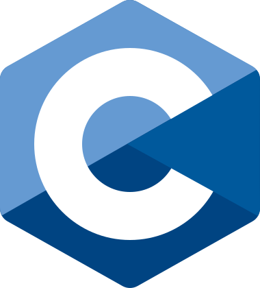

À propos de moi
Concepteur développeur en devenir, je recherche une alternance pour réussir la formation Développeur Fullstack Java Angular de Human Booster.
Un pied aussi bien dans la science que dans la philosophie et l'éthique. Mon parcours atypique m'a permis de mêler logique, programmation et réflexion
sur l'intelligence humaine et artificielle.
Passionné par la culture et en particulier les jeux videos, internet et le numérique à toujours eu une place prépondérante dans ma vie. Aujourd'hui j'aspire
travailler dans ce domaine afin d'apporter ma contribution à ce monde que j'aime tant.
Parcours
Les commencements en mathématiques, informatique et physique
Deux années de licence math-info-physique à l'université de Limoges. J'y ai acquéri des bases solides en algorithmique, programmation et logique.
Cette licence se concetrait sur les sciences de l'ingénieur. Cela m'a permis de faire mes premiers pas dans la programmation, tout en gardant un enseignement solide en physique et mathématiques. J'y ai notamment appris le langage C, l'algorithmique, le SQL et la gestion de bases de données. J'ai également eu l'occasion de découvir plus en profondeur le fonctionnement des ordinateurs et plus précisément des processeurs.
L'école d'ingénieur informatique
Une année à l'école d'ingénieur informatique ISIMA. J'y ai poursuivis mon cursus ingénieur, en particulier sur l'aspect informatique
J'ai poursuivis à ISIMA, école d'ingénieur informatique, car j'ai voulu d'avantage m'axer sur l'informatique.
J'avais pour but de me professionnalisé dans le développement logiciel.
Mais, au cours de cette première année, j'ai traversé une période difficile ― des problèmes de santé ainsi qu'une perte de sens
m'ont amené à me remettre en question personnellement. J'ai donc pris la décision, difficile et risquée, de me retirer pour mieux me recentrer.
La philosophie, un périple intellectuel
Licence et Master de philosophie à l'Université Clermont Auvergne et à l'Université de Lorraine
Je me suis réorienté dans un cursus de philosophie qui a été passionnant. Cela n'a pas été un renoncement à la science et au numérique, au contraire !
J'ai pu y approfondir mes questionnements et découvrir des aspects de la science que ne soupçonnais pas.
L'informatique et le numérique sont restés au coeur de mes préoccupations. Je me suis d'ailleurs spécialisé en philosophie de l'esprit.
J'ai pu explorer les sujets de la conscience humaine, de la raison et de l'intelligence artificielle, des sujets aussi passionnants que majeurs
à l'époque actuelle.
Retour au concret : référent à l'université
Depuis janvier 2025 je travail à la faculté de médecine de l'UCA en tant que référent fonctionnel pour le logiciel de scolarité Pégase. Ce poste ma place au coeur du déploiement du nouvel outil de gestion des données étudiantes, sans relever pour autant du développement informatique pur. En réalité mon rôle consiste en :
- tester les fonctionnalités du logiciel à partir de cas réels ;
- rédiger des comptes-rendus pour signaler les incohérences, les bugs ou les obstacles à l'usage ;
- accompagner les équipes administratives dans leur prise en main de l'outil, à travers des formations et de la documentation.
Avec ce poste, je consolide mes compétences en communication, en rédaction et en analyse technique. Je garde un pied dans le numérique mais j'aspire à plus.
L'ambition du développement web
Fort de ce parcours hybride, je désir ardemment me consacrer pleinement dans le développement et en particulier le développement web. C'est pour cela que je souhaite terminer mon cursus informatique. J'aimerais boucler la boucle ! C'est pour cela que je veux me former en alternance au métier de concepteur développeur d’applications avec l'école Human Booster et peut-être avec vous. Je construis actuellement mon portfolio pour mettre en valeur mes compétences techniques et ma démarche. Mon premier projet est le site que vous êtes actuellement en train de consulter. En espérant qu'il est aussi agréable à regarder qu'à lire !
Compétences
Langages de programmation
 HTML5
HTML5 CSS
CSS Java
Java Python
Python-  C (notions car pratiquées en contexte universitaire)
Frameworks
 Angular (familiarisation en cours)
Angular (familiarisation en cours)
Outils de développement
 Visual Studio Code
Visual Studio Code Git
Git GitHub
GitHub
Autres outils
.svg) Suite Microsoft Office (Word, Excel, PowerPoint)
Suite Microsoft Office (Word, Excel, PowerPoint) Zotero (gestion bibliographique)
Zotero (gestion bibliographique)
Compétences transversales
- Adaptabilité
- Autonomie
- Rigueur
- Communication écrite et orale
- Curiosité
- Esprit critique
Projets et portfolio personnel
Projet Profan ISIMA
Durant mon année d'étude à l'ISIMA, j'ai participé à un projet de groupe nommé Profan. Il s'agissait de cré
Site statique réalisé en HTML, CSS et JavaScript
Objectif : Présenter mon parcours, mes compétences, mes passions, mes projets et mes ambitions dans le cadre de ma recherche d'alternance. Avec une navigation animée et responsive, ce site est là pour démontrer ma maîtrise de certains fondamentaux.
Exercices et petits projets en Java, Python, Angular
Inserer texte ici
Réalisation d'une application complète : site pour un photographe
Inserer texte ici
Mémoire de recherche sur l'intelligence artificielle
Lors de mon master en philosophie, je me suis spécialisé en philosophie de l’esprit, un domaine qui s’interroge sur la nature
de la pensée humaine. Cette réflexion m’a conduit à explorer un modèle particulier de l’esprit, défendu par les philosophes
McDowell et Putnam, et connu sous le nom de naturalisme modéré.
Partant de cette approche, je me suis posé une question simple mais ambitieuse : une intelligence artificielle peut-elle
reproduire un esprit humain ? Pour y répondre, j’ai analysé les deux grands types d’IA existants — les IA symboliques et
les IA connexionnistes — en examinant leur fonctionnement, leurs capacités, mais aussi leurs limites fondamentales.
Mon mémoire montre pourquoi, selon le modèle de l’esprit que j’étudie, les IA actuelles (et peut-être futures) sont incapables
de reproduire ce que nous appelons réellement « un esprit humain », à moins d’une condition qui, à ce jour, semble irréalisable.
Si ce sujet vous intrigue, vous pouvez lire ou feuilleter mon mémoire en le téléchargeant ici :
« Les IA rêveront-elles un jour de moutons électriques ? Putnam, McDowell et le projet d’une intelligence artificielle »
[→ Télécharger le mémoire au format PDF].